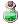

Mining
- Mining refers to a Monster Hunter: The Savage Coast mechanic or behavior. It is only applicable to High Rank Hunts.
Mining is one of the three gathering activities that can be done on the Savage Coast.
Mining allows you to collect different ores, which are used in crafting shadow gears,  Archangel Wings [1], and
Archangel Wings [1], and  Fallen Angel Wings [1].
Fallen Angel Wings [1].
Be sure to always be energized while mining as it gives you x2 rewards. You can eat soup at any base camp to refresh your energized ability.
Mining Tasks
Tasks for Level 1 Mining
- To start mining, talk to Henry, the mining instructor.
- He gives you a pickaxe, and the ability to start mining (You now have level 1 Mining).
Tasks for Level 2 Mining
- Talk to Henry, he tells you to mine 40 times, talk to him again to return the task. He gives you 3
 Dash Juice.
Dash Juice. - Mine about 160 more times for the next task.
- Henry tells you to mine 15 of the same ore in a row (Dragonstone, Aquastone, Flamestone) If you mine a different ore, the task resets.
- Talk to Henry after completing the task, he rewards you with 100
 Mithril,
Mithril,  Aetherite, or
Aetherite, or  Obsidian.
Obsidian. - Mine about 135 more times for the next task.
- He tells you to craft 1 ingot any type (see ingot section below).
- Return to him, he gives you 5
 Farcaster and level 2 mining.
Farcaster and level 2 mining.
Tasks for Level 3 Mining
- Mine about 50 times for the next task.
- Talk to Henry again, he asks you to defeat 2 Stonerings. (This step may take some time to complete as they spawn at a low rate while mining).
- After defeating the Stonerings, Henry gives you 7  Mega Hunter's Potion.
- Mine about 118 times for the next task.
- Talk to him again, he tells you to get 15 great mining successes. (see How to Mine section below).
- Once you complete that task, he gives you 150
 Azurite,
Azurite,  Firestone, or
Firestone, or  Quartz.
Quartz. - Mine about 179 times for the next task.
- Henry now tells you to bring him 1 piece of shadow gear. (This must be a Monster Hunter 2 shadow gear)
- Show your shadow gear to Henry, he gives you 2
 Aquastone Ingot,
Aquastone Ingot,  Flamestone Ingot, or
Flamestone Ingot, or  Dragonstone Ingot.
Dragonstone Ingot. - You now have level 3 Mining.
How to Mine
- Talk to Henry, the mining instructor to get the mining skill.
- Make sure to be energized. (Eat soup).
- Stand next to an ore deposit, and use your interact skill.
- When the mining bar is green and closer to the right side press interact again.
- Collect ores and repeat.
Great Success
A great success is when you stop the mining bar at or near the very end. This gives a small amount of bonus ores, and is indicated by starry eyes on the miner.
Types of Ore
There are 3 types of ore on the Savage Coast;
| Aquastone | Dragonstone | Flamestone |
|---|---|---|


Aquastone Ores
| Ore | Obtainable Mining Level | Point Value | Amount Needed For Ingot |
|---|---|---|---|
| Mithril
|
1 | 15 | 1200 |
| Azurite
|
2 | 75 | 240 |
 Beryl Beryl
|
3 | 150 | 120 |
Dragonstone Ores
| Ore | Obtainable Mining Level | Point Value | Amount Needed For Ingot |
|---|---|---|---|
| Obsidian
|
1 | 15 | 1200 |
| Quartz
|
2 | 75 | 240 |
 Dragonite Dragonite
|
3 | 150 | 120 |
Flamestone Ores
| Ore | Obtainable Mining Level | Point Value | Amount Needed For Ingot |
|---|---|---|---|
| Aetherite
|
1 | 15 | 1200 |
| Firestone
|
2 | 75 | 240 |
 Novacrystal Novacrystal
|
3 | 150 | 120 |
Crafting Ingots
| Smelter | |
|---|---|
 | |
| NPC Purpose: | Craft Ingots/Extract Ores |
| Map: | The Wyvern (@go mh) |
| Coordinates: | |
Ingots are used to craft shadow gears.
To craft an ingot, you must turn in 18,000 points worth of one type of ore to the Smelter.
You can use a combination of tier 1, 2, and 3 ores to create and ingot of that type.
Mithril + Azurite + Beryl = Aquastone Ingot
Obsidian + Quartz + Dragonite = Dragonstone Ingot
Aetherite + Firestone + Novacrystal = Flamestone Ingot
You can extract raw ores from an ingot, this will give back less ores than you spend to craft it:
- 600 tier 1 ores
- 80 tier 2 ores
- 24 tier 3 ores
| Monster Hunting | ||
|---|---|---|
| Low Rank Hunts • High Rank Hunts | ||
| Hunting Mechanics | Rage • Hate • Skills • Alterations | |
| Player Roles | Tank • Damage • Healer • Utility | |
| Monsters |
1-Star Hunts | Garanth • Nyia |
| 2-Star Hunts | Garronath • Nysori | |
| 3-Star Hunts | Angnar • Zaedronath | |
| Unreleased | Sybaris • Vakaris • Hrungnir • Anko & Mako | |
| Regular Monsters | Ambient Monsters | |
| Rewards | Shadow Gear (Low Rank, High Rank (1/2-star), Angnar, Zaedronath) • Shadow Gear Refinement
Archangel Wings • Fallen Angel Wings • Ancient Hero • Temporal Armors • Violet Halo • Magical Booster • Bio Weapon Helms | |
| Gathering & Combinations | Mining • Fishing • Foraging • Combinations | |
| Lore | The Savage Coast • The Wyvern • Astrid • Seruel • Delphina • Sain • Will • Reidin Kurs | |